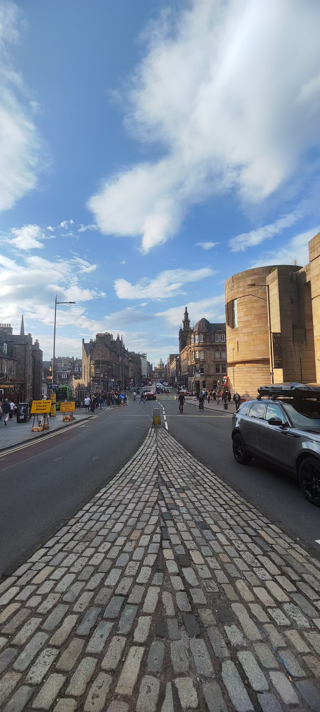

Cacophony

The first work captures anxiety, restlessness and distraction during an early visit to Edinburgh city centre. Field recordings made on the Royal Mile were processed through GRM Tools’ CombFilter and Shuffling, transforming urban sounds into pitch-resonant, fragmented and rapidly repetitive material.
The piece uses repetition and processed environmental sound to organise a dense and unstable auditory experience, forming the first stage of the restorative trajectory.